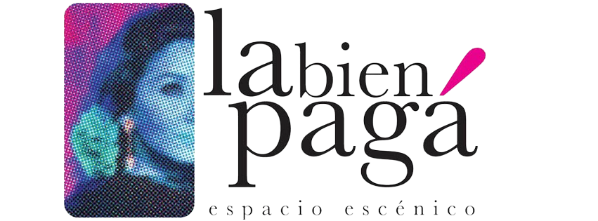
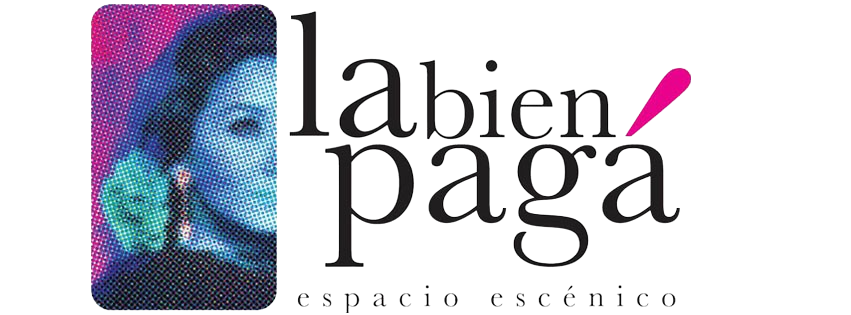
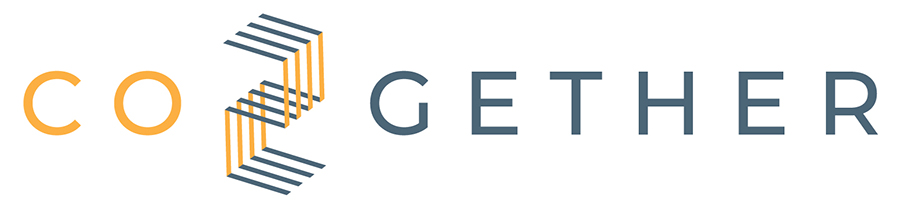
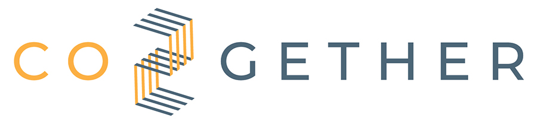

Due giorni di attività gratuite aperte a tutti e dedicate ad ambiente, gestione sostenibile dei rifiuti ed economia circolare.
D-Village Spello. Arriva l’evento green dell’estate umbra “Radici Urbane. Generazioni a confronto su Economia Circolare, BioEconomia e Arte”.
Il Festival delle Buone Pratiche, nato dal Progetto Europeo Eco-Champions.
Il 4 e 5 Luglio, Spello si trasformerà nel villaggio delle Buone Pratiche Sostenibili grazie all’evento Eco-Champions: Radici Urbane. Generazioni a confronto su Economia Circolare, BioEconomia e Arte.
Un evento articolato all’interno del D-Village e Social Hackathon Umbria che, giunto alla sua nona edizione, invaderà Spello dal 3 al 6 Luglio 2025.
Le giornate del 4 e 5 Luglio saranno dedicate all’ambiente, alla gestione sostenibile dei rifiuti, alle economie circolari e alle buone pratiche, con un programma ricco di attività gratuite e aperte a tutti. L’intento di Radici Urbane è infatti quello di uscire dal circuito chiuso dedicato agli “addetti ai lavori†per coinvolgere famiglie, giovani e meno giovani, in un confronto intergenerazionale che possa instillare consapevolezza, responsabilità individuali verso l’ambiente e fornire strumenti concreti per consentire ad ognuno di fare la propria parte.
L'emergenza climatica del resto ce lo impone: occorrono azioni concrete e collaborative per affrontare le sfide globali. A tal proposito Radici Urbane nasce come evento promotore di Eco-Champions, progetto nato nell’ambito del ğ—£ğ—¿ğ—¼ğ—´ğ—¿ğ—®ğ—ºğ—ºğ—® ğ—–ğ—˜ğ—¥ğ—© co-finanziato dall'ğ—¨ğ—»ğ—¶ğ—¼ğ—»ğ—² ğ—˜ğ˜‚ğ—¿ğ—¼ğ—½ğ—²ğ—® e della durata di 24 mesi che ha come principale intento la mobilitazione e il coinvolgimento attivo dei cittadini e delle autoritaÌ€ locali di 5 paesi Europei (Italia, Spagna, Belgio, Grecia e Kosovo), in un dialogo costruttivo e in attivitaÌ€ pratiche fondate sui temi della sostenibilitaÌ€ ambientale.
Il Programma
Venerdì 4 Luglio dalle 18.00 alle 19.30 si partirà con una passeggiata collettiva all’Acquedotto Romano, con un percorso olistico di attivazione del benessere psico-fisico tra natura, lentezza e conversazione insieme a WATT - Walk, Think, Talk.
La passeggiata si ripeterà il 5 Luglio dalle ore 8.30 alle ore 10.00
Sabato 5 Luglio, dalle ore 11.00 alle ore 16.30, si svolgerà il workshop Bioeconomia per la BioDiversitArte, pensato per tutt* e a cura di APRE - Agenzia per la Promozione della Ricerca Europea. Un laboratorio pratico e creativo per immaginare nuove soluzioni sostenibili guidati dagli esperti di APRE. L’appuntamento per partecipare al workshop del 5 Luglio è all’Infopoint del Social Hackathon Umbria, presso Piazza della Repubblica - Spello, alle ore 11.00.
Il progetto Eco Champions è un'iniziativa collaborativa volta ad affrontare una delle sfide più urgenti del nostro tempo: la gestione sostenibile dei rifiuti nel contesto del Green Deal europeo. Questa iniziativa dinamica mira a coinvolgere attivamente cittadini e comunità in discussioni e attività sulle politiche di gestione sostenibile dei rifiuti, sia a livello europeo che regionale. Il progetto mira a promuovere la partecipazione democratica ai processi decisionali, stimolare la responsabilità sociale e creare un senso di orgoglio per i paesaggi locali e regionali.
Il progetto ECO Champions è stato lanciato ufficialmente a dicembre 2024 a Pristina, in Kosovo, segnando l'inizio di una partnership incentrata sulla sostenibilità . L'iniziativa, sostenuta dall'Unione Europea, darà impulso alle attività principali in Belgio, Spagna, Italia, Grecia e Kosovo.
Scarica il manuale di formazione in Italiano
Nasce il progetto Eco-Champions: un Passo Avanti Verso la Sostenibilità Ambientale in Europa
Nel contesto delle crescenti pressioni ambientali e climatiche che caratterizzano il nostro tempo, emerge con chiarezza la necessità di azioni concrete e collaborative per affrontare le sfide globali.
In risposta a questo imperativo nasce nell’ambito del Programma CERV, il progetto Eco-Champions, co-finanziato dall’Unione Europea e della durata di 24 mesi, che si pone un’ambiziosa sfida: quella di promuovere la gestione sostenibile dei rifiuti nell'Unione Europea attraverso l'attiva partecipazione dei cittadini e delle comunità .
L'obiettivo centrale di Eco-Champions è quello di mobilitare e coinvolgere attivamente cittadini e autorità locali in un dialogo costruttivo e in attività pratiche mirate alla gestione sostenibile dei rifiuti. Il consorzio che costituisce il progetto è composto da cinque partner coordinati da Connect Brussels, Belgio, e sono: Bond Beter Leefmilieu dal Belgio, la Bien Pagá dalla Spagna, Crhack Lab Foligno 4 D dall’Italia, Co2gether dalla Grecia e il Balkan Forum dal Kosovo, che insieme lavoreranno per sensibilizzare ed educare i cittadini e le autorità che verranno coinvolte, con workshop, formazioni e attività pratiche.
Una delle caratteristiche distintive di Eco-Champions è la sua metodologia inclusiva e olistica che coinvolgerà cittadini di diverse età e provenienze per aprire un dialogo intergenerazionale su tematiche ambientali così importanti.
Attraverso questo approccio intergenerazionale, il progetto mira a creare un senso di comunità e responsabilità condivisa, oltrepassando le barriere anagrafiche, per promuovere un futuro più verde e sostenibile per l'Europa e oltre.
Parte integrante di questo percorso saranno gli eco-festival organizzate in cinque diverse città dei cinque paesi partner, dove i partecipanti non solo competeranno ma collaboreranno per sviluppare soluzioni innovative e pratiche per la gestione dei rifiuti. Un processo di votazione inclusivo premierà gli "eco-cittadini" più impegnati, riconoscendo e celebrando i loro contributi al benessere ambientale locale e regionale.
In linea con l'agenda e le priorità del Green Deal dell'UE, Eco-Champions si propone di identificare le esigenze specifiche per una gestione sostenibile dei rifiuti nei vari contesti nazionali, utilizzando una metodologia robusta che garantisca risultati tangibili e duraturi. Il progetto non solo aspira a promuovere cambiamenti comportamentali a medio e lungo termine ma anche a rafforzare il tessuto democratico e civico dell'Unione Europea, attraverso la partecipazione attiva.
L’aspirazione di Eco-Champions è contribuire alla lotta globale contro il cambiamento climatico, per la sostenibilità ambientale.
Partner:

 

 


Project: 101147501 — ECO CHAMPIONS — CERV-2023-CITIZENS-CIV
Funded by the European Union. Views and opinions expressed are however those of the author(s) only and do not necessarily reflect those of the European Union or the Youth Affairs Agency. Neither the European Union nor the granting authority can be held responsible for them.
Analisi dei Bisogni per una Gestione Sostenibile dei Rifiuti
Il progetto Eco-Champions entra in una fase cruciale che prevede la raccolta di dati fondamentali per comprendere l'attuale situazione della gestione dei rifiuti nei Paesi coinvolti. I partner stanno elaborando specifici questionari per raccogliere sia dati quantitativi – relativi alla produzione, tipologia e smaltimento dei rifiuti – sia dati qualitativi, attraverso questionari semi-strutturati volti a comprendere percezioni, preoccupazioni culturali e suggerimenti della comunità .
L’analisi si concentrerà su diversi aspetti chiave, tra cui il quadro normativo e politico, le specificità locali, le esigenze di persone disabili e anziane, oltre alla valutazione dell’impatto ambientale e delle infrastrutture esistenti.
Successivamente, saranno organizzati due eventi online per definire un modello strutturato che guiderà il processo di valutazione in modo sistematico e inclusivo, considerando le diverse esigenze demografiche.
Questa fase rappresenta un passo essenziale per costruire strategie mirate e sostenibili, che costituiranno il metodo innovativo del progetto e che coinvolgono attivamente le comunità nella transizione verso una gestione dei rifiuti più efficiente ed ecologica.